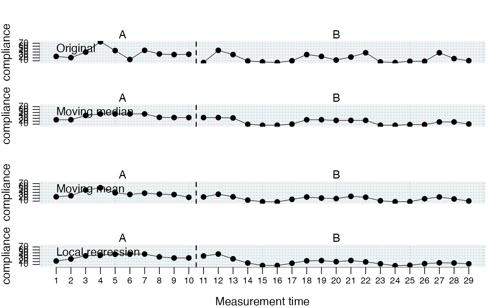

The smooth_cases function provides procedures to smooth single-case data
(i.e., to eliminate noise). A moving average function (mean- or
median-based) replaces each data point by the average of the surrounding
data points step-by-step. With a local regression function, each data point
is regressed by its surrounding data points.
smooth_cases(data, dvar, mvar, FUN = "movingMedian", intensity = NULL) smoothSC(...)
| data | A single-case data frame. See |
|---|---|
| dvar | Character string with the name of the dependent variable. Defaults to the attributes in the scdf file. |
| mvar | Character string with the name of the measurement time variable. Defaults to the attributes in the scdf file. |
| FUN | Function determining the smoothed scores. Default |
| intensity | For |
| ... | Further arguments passed to the function. |
Returns a data frame (for each single-case) with smoothed data
points. See scdf to learn about the format of these data
frames.
Other data manipulation functions:
fill_missing(),
longSCDF(),
outlier(),
ranks(),
shift(),
standardize(),
truncate_phase()
Juergen Wilbert
## Use the three different smoothing functions and compare the results study <- c( "Original" = Huber2014$Berta, "Moving Median" = smooth_cases(Huber2014$Berta, FUN = "movingMedian"), "Moving Mean" = smooth_cases(Huber2014$Berta, FUN = "movingMean"), "Local Regression" = smooth_cases(Huber2014$Berta, FUN = "localRegression") ) plot(study)